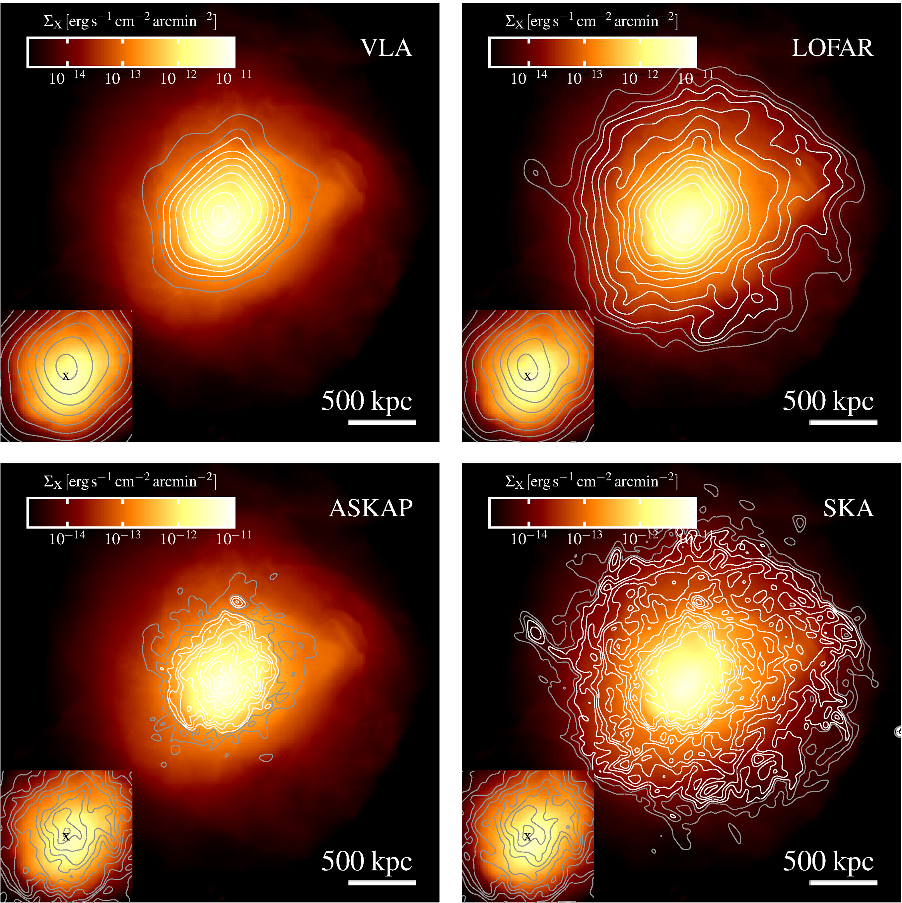
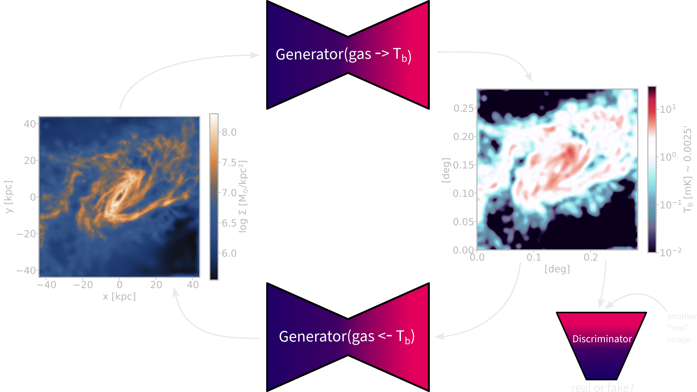

Deep learning the mapping between
SKA mocks and hydrodynamical simulations
SKA research at the Centre for Artificial Intelligence ZHAW
12/01/2023
by
Philipp Denzel 
SKA research at the Centre for Artificial Intelligence ZHAW
12/01/2023
by
Philipp Denzel
Slides on my website
Link/QR code to the slides for later or to follow along
About myself
- PhD in Physics from UZH @ ICS
- computational scientist & astrophysicist by training, machine learning enthusiast
- high-performance computing: dark-matter detection, star formation, etc.
- gravitational lensing (e.g. see Denzel et al. 2021a or Denzel et al. 2021b)
- machine learning engineer @ CAI ZHAW
Hydrodynamical simulations
- cosmological & astrophysical processes from first principle
- highly tuned on a vast range of scales
- subgrid models for the processes that aren't resolved
- large-scale structure of the Universe (dark-matter)
- realistic galaxy models (baryons, radiation)
- latest simulations reach (almost) petabyte sizes ⇾ ideal for deep learning
- IllustrisTNG, Simba, FIRE, EAGLE, and others
Generative deep learning
- find parameters \(\theta\) to approximate a data density
(optionally conditioned on some information \(c\)) \[ P_\theta(x|c) \sim P_\text{data}(x|c) \] - in contrast to discriminative deep learning:
- pattern recognition
- (inspired) creativity ⇾ much more ambitious
Latest successes
LDMs by Rombach et al. (2022), Google's Imagen, or OpenAI's DALLE-2
- new champions in semantic understanding
- generate images up to 1 Megapixel!
"A corgi's head depicted as
an explosion of a nebula"
from Ramesh et al. (2022)
"A dolphin in an astronaut suit
on saturn, artstation"
from Ramesh et al. (2022)
"Panda mad scientist mixing
sparkling chemicals, artstation"
from Ramesh et al. (2022)
Approaches and objectives
- GANs: \(\quad \mathbb{E}_{x\sim p_\text{data}}[\log{D_\theta(x)}] + \mathbb{E}_{z\sim q(z)}[1-\log{D_\theta(G_\theta(z))}]\)
- fast, high quality, implicit density, mode collapse
- VAEs: \(\quad \log{p(x)} \ge \mathbb{E}_{z\sim q_{\theta}(z\vert x)}[\log{p_\theta(x\vert z)}] - D_{KL}\left(q_\theta(z\vert x) \vert\vert p(z)\right)\)
- fast, regularized latent space, lower bound to LL, trade-offs: reconstruction ⇿ regularization
- Autoregressive models: \(\quad p(x) = \prod_i p_\theta(x_i\vert x_{\lt i})\)
- exact, good results, no latent representation, slow inference
- Diffusion Models: \(\quad -\log{p(x)} \le \mathbb{E}_{q}[\log{\frac{q(x_{1:T}\vert x_0)}{p_\theta(x_{0:T})}}]\)
- flexible, high fidelity, lower bound to LL
- Normalizing flows: \(\quad p_{\theta}(x) = p(f_{\theta}(x)) \cdot J_{f_{\theta}^{-1}}(x)\)
- invertible, latent variable, exact likelihood, expensive in high-dimensional spaces
Data
IllustrisTNG
Gallery of synthetic images of SKIRT post-processed galaxies
Credit: IllustrisTNG Collaboration
Magneto-hydrodynamics
magnetic field strength (TNG100), Credit: IllustrisTNG Collaboration
SKA mock observations

CycleGAN
- two generator - discriminator pairs
- learn the mapping from domain A ⇿ B and vice versa

[Preliminary results]
- dataset: roughly 10'000 galaxies from TNG50-1
- brightness temperature of the gas \(T_b(\mathbf{x}) = 189 h \frac{H_0}{a^2H(a)} \frac{\rho_{\text{HI}}(\mathbf{x})}{\rho_c}\,\text{mK}\)

Future plans
- include more physics
- magnetic field strength
- spectral models
- noise
- actually simulate SKA instruments using OSKAR/Karabo
- try more types of generative deep learning models